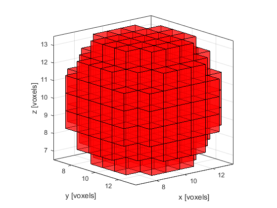

voxelPlot
3D plot of voxels in a binary matrix.
Syntax
voxelPlot(mat) voxelPlot(mat, ...)
Description
voxelPlot produces a 3D plot of a binary matrix, where filled voxels are displayed at the positions of the 1's. The colormap, transparency, and axis limits can be controlled through optional inputs. For example running
voxelPlot(makeBall(20, 20, 20, 10, 10, 10, 4), 'AxisTight', true, 'Color', [1 0 0], 'Transparency', 0.5); view([50, 15]);
will produce a semi-transparent image of a red ball.
Inputs
mat |
binary 3D matrix |
Optional Inputs
Optional 'string', value pairs that may be used to modify the default computational settings.
| Input | Valid Settings | Default | Description |
|---|---|---|---|
'AxisTight' |
(Boolean scalar) | false |
Boolean controlling whether axis limits are set to only display the filled voxels. |
'Color' |
(three element numeric vector) | [1, 1, 0.4] (yellow) |
Three element vector specifying rgb color. |
'Transparency' |
(numeric scalar) | 0.8 |
value between 0 and 1 specifying transparency (1 gives no transparency). |
Examples
- Simulations In Three Dimensions
- Focussed Detector in 3D
- Modelling Sensor Directivity in 3D
- 3D FFT Reconstruction For A Planar Sensor
- 3D Time Reversal For A Spherical Sensor
See Also
patch